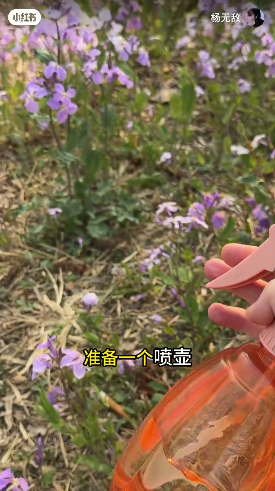
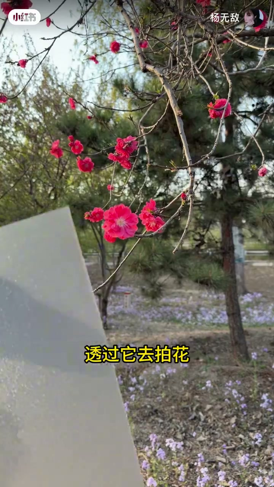
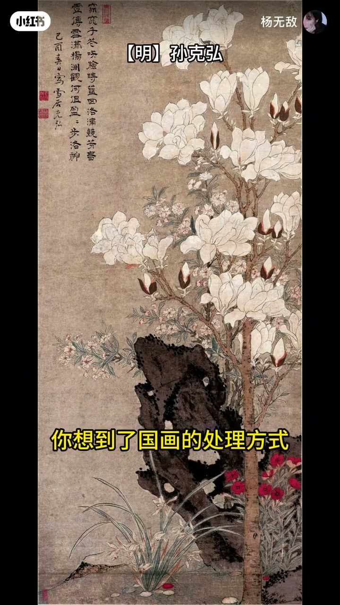
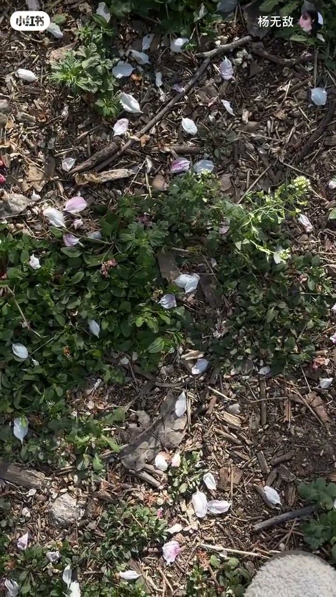
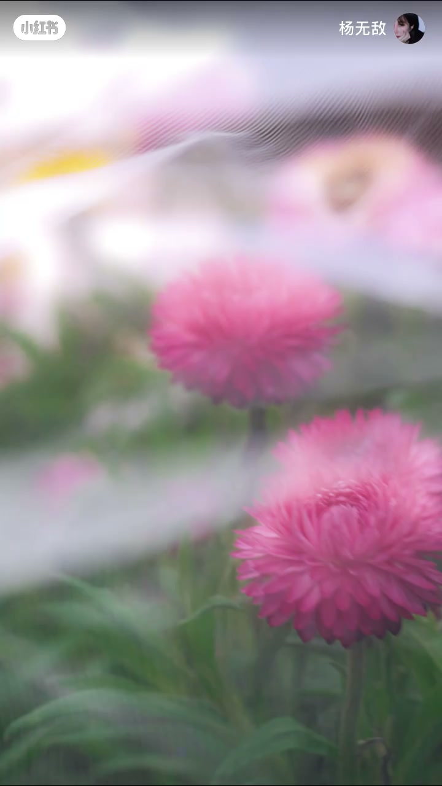
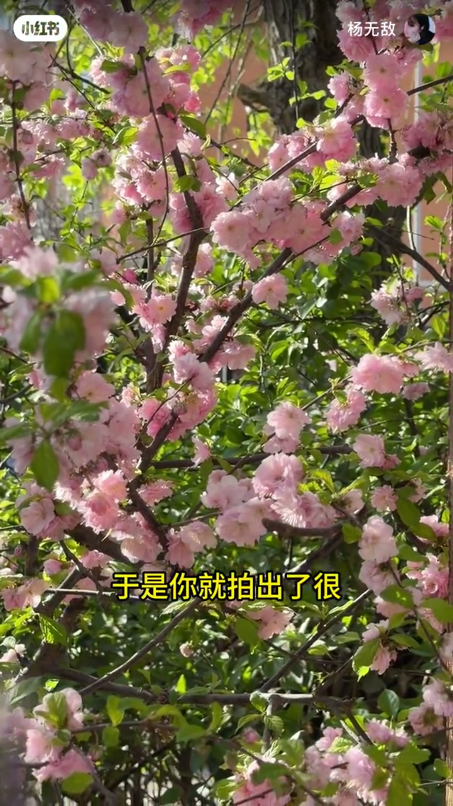
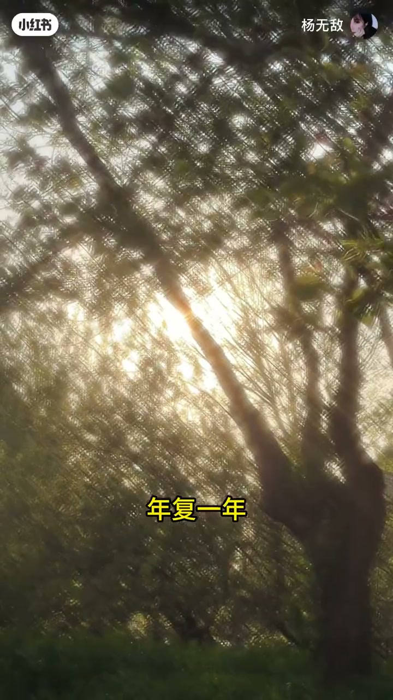

内容要点
一支 1 分 43 秒的拍花教程：针对「拍多了千篇一律」的困扰，用五个随手可得的小道具——喷壶、透明塑料板、彩色卡纸、碎花瓣、纱巾——把静态的花拍出动态的氛围感。每步都有成品画面对照，跟着做就能出片。
知识结构
花大多是静态的，氛围感来自动态时刻。用喷壶把风的形状具象化，用水珠表达花朵的鲜嫩。
多雨春季有朦胧浪漫。把水喷到塑料板上，透过它去拍花。
花的背景杂乱时，想到国画处理方式：平面化、乱中取静。拿出彩色卡纸，还能模仿画作装裱。
花一定要长在地上树上吗？捡起一地碎花瓣装进带水的碗，再用 Live 图特性，得到更生动的春天。
材质轻盈、有细密小孔的纱巾，调慢快门拍出梦幻感；盖在镜头前，显出光的形状。
生活日复一日，但祝我们都不要错过每一个花期的到来。
拍花出片的关键是给静态花朵制造动态氛围：喷壶造水珠、塑料板做朦胧、卡纸压杂乱、碎花瓣玩创意、纱巾出梦幻。五个道具五种氛围，全片可复现。
00:00-00:20喷壶：把风的形状具象化
「最近花开得好好啊，但是我拍多了感觉都千篇一律的。」视频从真实的困扰出发。解法是什么？「没关系，我教你一些不那么路人的方式。」
核心观察：「花嘛，大多是静态的，而氛围感呢，常来源于那些动态的时刻。」于是第一个道具登场：喷壶。「不如准备一个喷壶，把风的形状具象化，用水珠表达花朵的鲜嫩。」喷水的一瞬，水珠在花瓣间飞散，静态的花立刻有了呼吸感。

00:20-00:40透明塑料板：多雨的朦胧浪漫
「而除了阳光明媚，多雨的春季又有独属于它朦胧的浪漫。」第二个道具是透明塑料板：「将水喷到塑料板上，透过它去拍花，你就得到了……」画面中的花被水雾虚化，色彩变得柔润，仿佛隔着雨帘看花。

00:40-00:56彩色卡纸：乱中取静
「可很多时候你发现花的背景很杂乱。」面对杂乱背景，视频提出国画的处理方式：「平面化，乱中取静。」具体操作是拿出彩色卡纸——「所以你拿出了一张彩色卡纸。」把花与卡纸同框，背景的杂乱被卡纸的色块压住，画面瞬间安静。
「举一反三，模仿画作的装裱也可以。」同样的思路还可以玩出更多花样。

00:56-00:71碎花瓣：换个载体玩创意
「你又想，花一定要拍在地上树上的吗？」第四个道具打破常规。「你捡起了一地的碎花瓣，把它们装进了带水的碗中。」花瓣漂浮在水面，色彩在水中晕开。
「再充分利用 Live 图的特性，你就得到了更生动的春天。」Live 图记录的一小段动态，让花瓣的漂浮成为流动的画面。

00:71-00:91纱巾：慢门与光的形状
最后一个道具是纱巾：「手边有一条很适合春天的纱巾，它材质轻盈，还有细密的小孔。」「于是你调慢快门，就得到了……」慢门下纱巾在花间飘动，画面变得梦幻。
「你甚至学会了把它盖在镜头前，显出光的形状。」纱巾遮住镜头，光线透过小孔形成光斑——「于是你就拍出了很有梦幻感的春天。」


00:91-01:43结尾：不要错过花期
「生活虽然日复一日，年复一年，但祝你我都不要错过每一个花期的到来。」画面回到盛开的花景——「一切重新开始，一切生机盎然。」道具带来的不仅是技巧，更是提醒人去留意季节流转中的美。

完整转录（33段）
以下文本由 Whisper medium 模型自动转录，可能存在少量识别误差，已尽可能修正。
最近花开的好好啊
但是我拍多了感觉都千篇一律的
没关系我教你一些不那么路人的方式
花嘛大多是静态的
而氛围感呢常来源于那些动态的时刻
那么不如准备一个喷壶
把风的形状具象化（保留）
用水珠表达花朵的鲜嫩
而除了阳光明媚
多雨的春季又有独属于它朦胧的浪漫
于是聪明的你又拿出了一块透明塑料板
将水喷到塑料板上
透过它去拍花你就得到了
可很多时候你发现花的背景很杂乱
你想到了国画（保留）的处理方式
平面化 乱中取静
所以你拿出了一张彩色卡纸
举一反三
模仿画作的装裱也可以
你又想花一定要拍在地上树上的吗
你捡起了一地的碎花瓣
把它们装进了带水的碗中
再充分利用Live图（保留）的特性
你就得到了更生动的春天
最后你发现手边有一条很适合春天的纱巾
它材质轻盈 还有细密的小孔
于是你调慢快门就得到了
你甚至学会了把它盖在镜头前
显出光的形状
于是你就拍出了很有梦幻感的春天
生活虽然日复一日 年复一年
但祝你 我都不要错过每一个花期的到来
一切重新开始 一切生机盎然